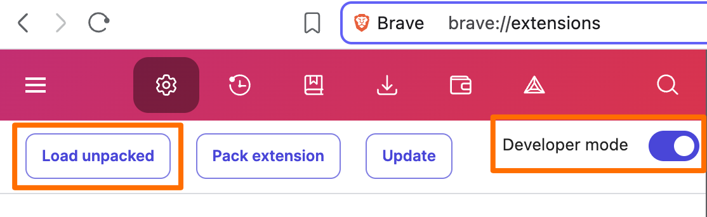

Install The Kapture Browser Extension
Install from Chrome Web Store
The easiest way to install Kapture - no developer mode required!
Alternative Method
Manual Installation
Manual installation requires developer mode and may show occasional warnings about developer mode extensions.
1
Download the Extension
Clone or download the Kapture repository from GitHub to get the extension files.
2
Install the Extension
Load the extension into Chrome with these steps:
-
Navigate to
chrome://extensions/in your browser - Enable Developer mode using the toggle in the top-right corner
-
Click "Load unpacked" and select:
- The extracted folder (if you downloaded the extension)
- The
/extensionfolder (if you cloned the repo)

3
Pin the Extension
For easy access, pin Kapture to your browser toolbar:

Click the puzzle piece icon and then click the pin next to Kapture MCP Browser Automation.